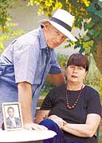
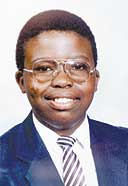

Insight
A rite that went wrong
In the wake of a recent spate of initiation deaths, Lin Sampson tells the story of Nzuzu Mbavane, one boy who didn't survive the transition to manhood
Vanessa Weissenstein lives in the leafy suburb of Newlands, in Cape Town. She sits on a large white sofa sipping a drink. Beside her is a box of tissues. She has warned me that there will be tears.
"You know that feeling when you are riding a bicycle and you run into a tree and it hits you just under the nose? Everything seems fine and then suddenly the memory of it comes back and you want to blub."
Within this salubrious atmosphere of the southern suburbs there lurks another reality. It is a boy on a harsh hillside —a boy who calls for help. But nobody is listening.
Seventeen years ago, when Weissenstein started her loving relationship with a small boy called Nzuzu, then just two years old, she could hardly know that it would forever change her perception of the country in which she lived and that although it would give her a foothold in another culture, she would pay dearly for it.
She is paging through an album with photographs of a sweet-faced boy, still with childishly plump flesh.
There are pictures of him blowing out candles on a cake, dressing up variously in a Robin Hood outfit and in the scarlet tunic of a Grenadier Guard. There are photographs of him at parties and lying in the sun at a Clifton cottage.
The story of Nzuzu and Weissenstein started when Weissenstein was married to Brian Levinsohn, her first husband, who drowned while diving.
Says Weissenstein: "I had a domestic worker called Lettie, and she had a friend called Lizzie Mbavane who had a little boy called Nzuzu, who was two when my son Joshua was born. Lizzie was a remarkable woman. She had put two older children through university. Nzuzu was her laatlammetjie [the baby in the family ] ."
As a result of Mbavane's visits, it was natural that the two children would grow up together. "My husband had just died, and I didn't want my unhappiness visited upon one child. One child can be a very miserable and lonely thing."
From the start, Nzuzu seemed perfectly in tune with Weissenstein's life. "From the age of two he was with me all the time."
After Levinsohn's death, she married Wolfgang Weissenstein, and life with Nzuzu settled into a routine. He would spend weekends with the Weissensteins and the rest of the week with his mother.
"His mother and I were very close, so we would often take decisions about his future together," says Weissenstein.
In those years, Nzuzu became a paid-up member of the southern suburbs set. He was a child of the well-heeled Newlands and Hiddingh Estate. Boys and girls vied for his attention. He was the most wanted guest at children's parties.
However, through Nzuzu's veins coursed the blood of his own culture. He never forgot he was a Xhosa.
Through the ups and downs of a boy living in two worlds , there was one thread that remained constant - the notion of circumcision and initiation. The idea appeared to invoke in him both a terror of the unknown and the thrill of becoming a grown man.
"Ever since he was able to think for himself," says Weissenstein, "he was very keen on being initiated. The subject kept coming up. We would drive to the airport and he would see the young initiates and say, 'One day I'm going to do that.'
"I never wanted to express my fears because it was very much part of his cultural tool kit but secretly I just hoped the whole thing would go away."
According to traditional healer Simpiwe Citshe, initiation is a vital part of male development. "In the Xhosa culture, if you do not go through initiation and circumcision you never leave boyhood. The community in which you live will never accept you. The removal of the foreskin marks the beginning of manhood."
When he was in Std 8 at Wynberg Boys High, Nzuzu's mother felt that he needed to get in touch with his cultural roots. Although he spoke Xhosa, he could not read or write it.
"It was round this time that we got rumours of rain," says Weissenstein.
Nzuzu was 16 and experiencing the transgressive period of puberty. He would go out and play arcade games and come home later than promised. His mother felt that he didn't have the cultural strength that he needed to face the kind of onslaught he was going to get from 20th-century city living.
It was arranged that he would go and live with his grandmother in the Ciskei and visit Cape Town for the holidays.
"The last time he went back on the bus, he was mugged. We had given him about R600, and he lost the lot."
For many years, the Weissensteins have taken a summer house beside the lagoon in Nature's Valley. It was a summer holiday that Nzuzu looked forward to.
"Late one Saturday night, just before the June holidays, he phoned and said he would not be coming. He said, 'I am going tomorrow to have my initiation. It will be at 12 o'clock, and I want you to think about me.'
"All I could say to him was that we loved him and that he was to clear his mind and think positively. I told him that if he was feeling bad he must be sure to get help. I told him to be careful not to get dehydrated. He said, 'Don't worry, Vanessa, I'm not going to die. I'm not going to die.' "
By the time Sunday came and Weissenstein had heard nothing, she felt that everything must be OK. On Monday, Mbavane called from the Ciskei to say that her son had died of pneumonia, a complication of the circumcision.
At this point in the story, Weissenstein breaks into sobs, her grief compounded by a feeling of exclusion. "Even his own mother did not really know what went on in an initiation ceremony. It is very much a male thing, something from which women are barred."
Weissenstein knew that Nzuzu was frightened. However, according to Zweliya Nyikima, a trained traditional nurse who works as a librarian in the Cory Library at Rhodes University and recently guided his own son through initiation, deaths are unusual, although more are reported nowadays.
"We encourage that a boy gets a pre-initiation medical certificate. For instance, I am seeing a boy through initiation now and because he is asthmatic I allow him to take fluids which are normally restricted during the course of initiation. A nurse has to be there all the time monitoring the situation."
Among westerners, the biological changes of puberty are seldom accompanied by rites of passage, but in most other societies, biological maturity has to be reinforced by ritual to create all-round adult status.
Initiation does not always include circumcision. But the Xhosa regard circumcision as a vital part of adult status. The high point of the period is the circumcision, during which the candidate is not supposed to show pain but to shout: "I am a man."
Those who leave are thought to be sissies. Citshe endorses the idea: "If a boy is taken to hospital during initiation, he could be rejected by his community."
Problems resulting from the surgical technique itself are rare. Most complications are caused by bad post-operative procedures. Also, the role of the ikhankatha (initiate's nurse) is vital. Inexperience and negligence on the part of these nurses often result in initiates being rushed to hospital.
Says Weissenstein: "People say to me that I should have kicked up more of a fuss but I don't think it is the role of the white person in this country to interfere. I think the control will come from the mothers. Black women in this country have always been very vocal, and believe me they are going to take care of their young."
She adds: "To me it was something rather like the aboriginal songlines [the equivalent of road maps in the form of verse]. You might read about them but you would never fully understand the true implications."
But perhaps what Weissenstein is also saying is that in a world where rites and spirituality are on the decline, these ancient customs should be carefully tended. It is important for all of us to follow that inner drum that is our cultural heritage.
The whole process of Nzuzu's life and death has served to crystallise her idea of how we should live in a country like South Africa. "We were born here and live among people from so many different cultures and spiritual backgrounds. We should accept others' differences, even if we do not fully understand them. You don't choose who you are going to love. They come to you and each teaches you something."
Dabbing at her red eyes, she says: " Nzuzu did not need me. He truly did not need me. I got just as much out of him as he got out of me." She adds: "He would have made a fine man."
http://www.cirp.org/library/news/suntimesza12-17-00/